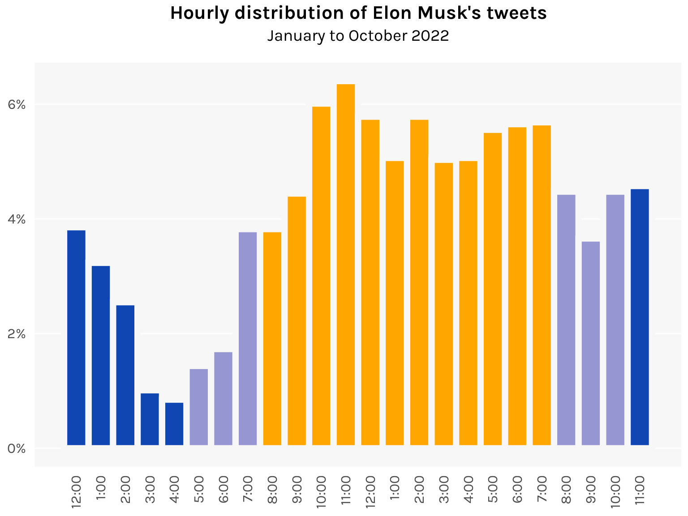

Two Points Make a Line
Telling stories through visualized data — by Kenneth S. Reyes
Subscribe
About
Categories
All
(18)
2d-density
(1)
bar
(8)
heat-map
(1)
histogram
(3)
interactive
(5)
line
(6)
lollipop
(1)
map
(4)
network
(1)
ridges
(1)
scatter
(4)
strip
(1)
survival
(1)
waterfall
(1)
Home
Telling the future is hard
A forecasting tournament put the predictive powers of social scientists to the test. They, ah, didn’t do so well.
interactive
strip
heat-map
line
Mar 12, 2023
The demographics of Nobel laureates
I’m starting to think there might be privileges to being old, white, and male
line
bar
Mar 3, 2023
Putin’s leverage, Putin’s folly
A newly released dataset lets us visualize the patterns of global trade on the eve of Russia’s invasion of Ukraine
bar
network
Feb 22, 2023
The standard age
At what age are we our “standard” selves, when we are neither too young nor too old?
histogram
line
Feb 14, 2023
Francis is an old pope
At 86, the current supreme pontiff is making his mark as one of history’s oldest. How long can he go on?
histogram
lollipop
survival
Feb 6, 2023
Will people care about this Oscars?
On the surprising popularity of the 2023 nominations for Best Picture
bar
scatter
interactive
Jan 26, 2023
Somehow, Avatar has returned
The highest grossing movie of all time got to the top gradually rather than all at once
line
Dec 21, 2022
Luzon’s hiking trails
Creating a stylized map of mountains using ridgelines
map
ridges
Dec 15, 2022
I’m gonna carry that weight
Using a massive dataset of powerlifting competitors to set my gym goals for next year
2d-density
Dec 7, 2022
War is over (if you want it?)
A tally of active armed conflicts as of Christmas Day, since 1946
bar
Dec 3, 2022
More on the great post-1500 migrations
Which countries have the most diverse ancestors? Which countries have the most descendants around the world today?
map
bar
scatter
interactive
Nov 26, 2022
The roots of economic development
Visualizing some key results in Spolaore and Wacziarg’s 2013 survey
scatter
map
interactive
Nov 25, 2022
The emotional shape of novels
Using sentiment analysis, I chart the emotional highs and lows of three classic novels
waterfall
Nov 19, 2022
That FTX balance sheet
SBF shops around for investors with a balance sheet that is emphatically not GAAP
bar
Nov 15, 2022

Visualizing Elon Musk’s Twitter addiction
The world’s busiest billionaire finds the time to tweet at all hours of the day
bar
histogram
Nov 13, 2022
Should you dual wield y axes?
Points to keep in mind when resorting to a secondary axis
bar
line
Nov 10, 2022
Mapping the Metro Manila subway
In a fit of wishful thinking, I use Leaflet to map the Metro Manila subway as if it existed
map
interactive
Nov 8, 2022
Exercises in plotting WDI data
Pull the data with R instead of downloading spreadsheet after spreadsheet
line
scatter
Nov 5, 2022
No matching items